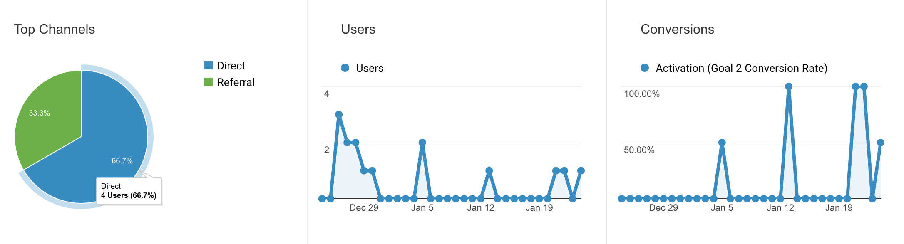

Welcome to my analytics portfolio! This portfolio site was built to mimic an extremely simplified version of the Pirate Metrics, through the tracking of acquisition, activation, retention, referral, revenue via Google Analytics.
A
A
R
R
R
Acquisition simply tracks the number of visits this portfolio site gets (session tracking).
Activation tracks engagement, which looks at the number of users that clicks on a button or link on the site, out of all visitors.
Retention although should track visitors that come back to retail sites, for the purpose of simplicity, whenever a user visits both the landing page and another page (cv page), the criterion is met.
Referral is represented on this site by this referral button (here). No real sharing is performed, but do click if you think this is pretty cool and you’d like to share! :)
Revenue is symbolized by the tiny money button at the very top. Whenever a visitor clicks on the money button, revenue is tracked.